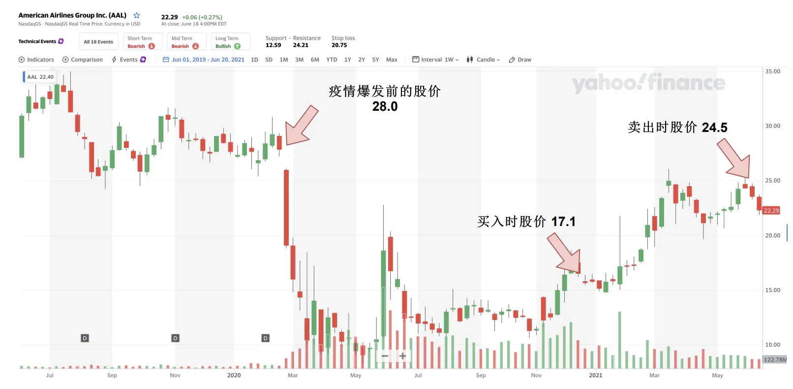
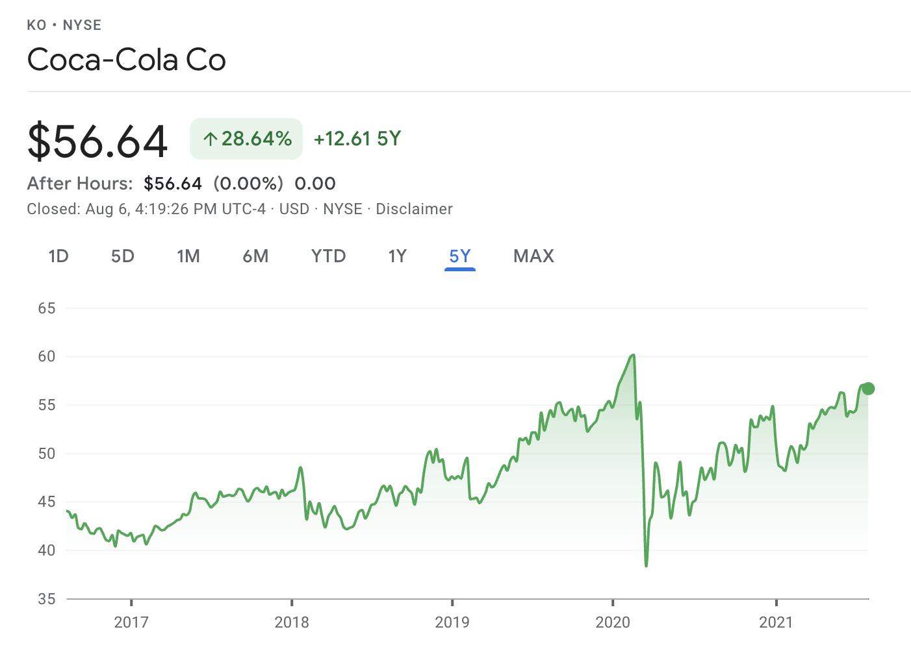
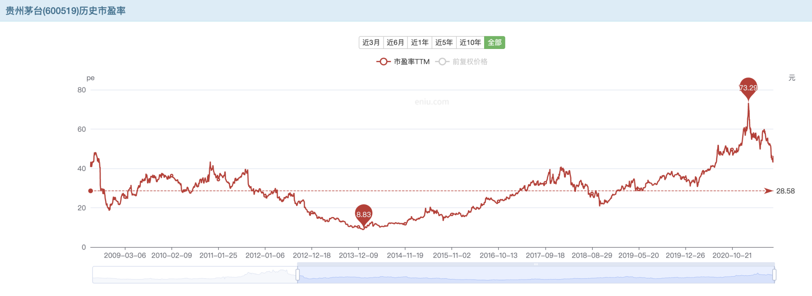
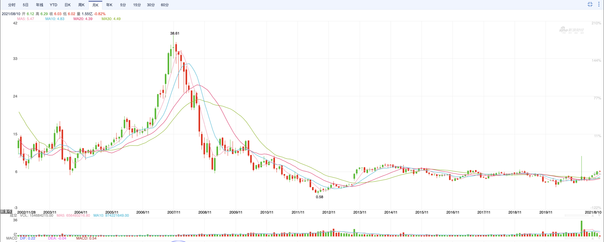
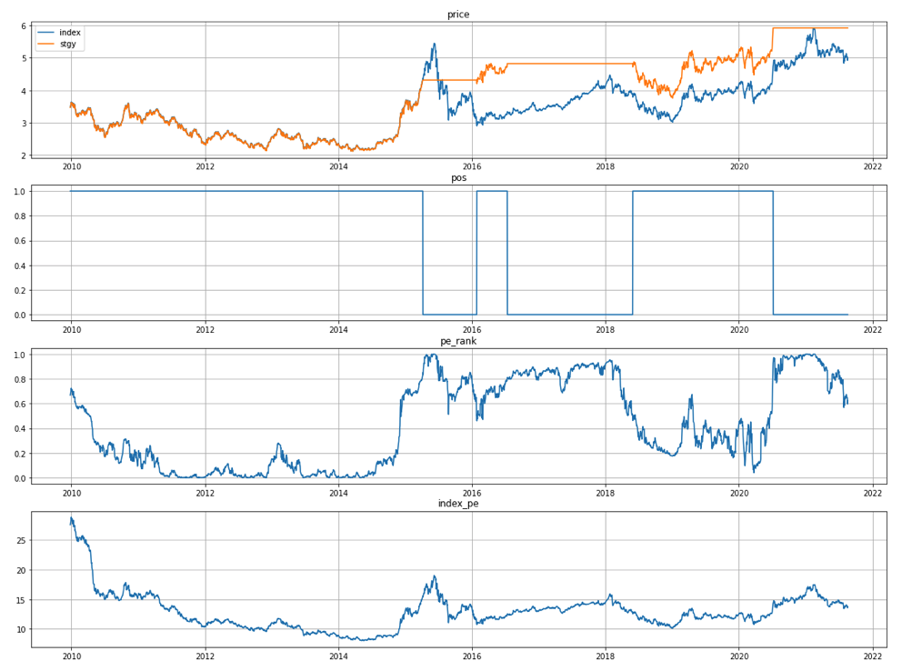
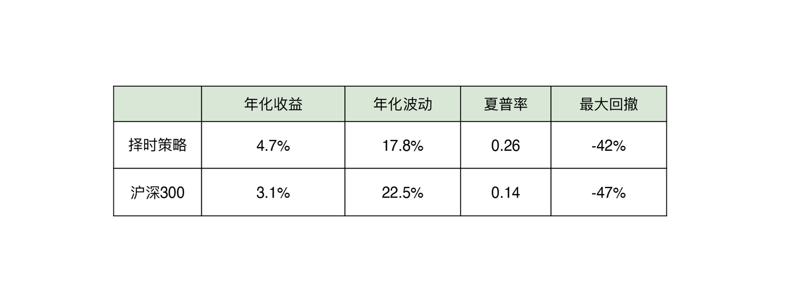

- 00 开篇词 为什么说程序员最适合学财富管理？.md.html
- 01 财富框架：建立属于你自己的财富双塔.md.html
- 02 个人发展：你自己的发展才是最大的财富源泉.md.html
- 03 理财金字塔：如何建立稳固的投资理财结构？.md.html
- 04 实战知识：有哪些收益稳健的经典资产配置组合？.md.html
- 05 支点投资法：主动投资是讲逻辑的！.md.html
- 06 不当韭菜：在财富管理的过程中摆正心态，知己知彼.md.html
- 07 职业方向：如何选择一个有前景的职业方向？.md.html
- 08 职业规划：大公司VS小公司，怎样选择更有前途？.md.html
- 09 期权股权：如何正确处理公司的期权、股权？.md.html
- 10 跳槽涨薪：如何规划一条合理的职业道路？.md.html
- 11 财富拓展：35岁失业？程序员如何拓宽财富渠道？.md.html
- 12 房产投资：如何做出理性的买房决策？.md.html
- 13 实战知识：让我们编程计算下怎么还房贷最合适.md.html
- 14 基金投资：如何让专业人士帮你赚钱？.md.html
- 15 实战知识：如何选出一只优质的基金？.md.html
- 16 股票投资：最适合散户的股票投资方法是什么？.md.html
- 17 投资闭环：如何成为越来越专业的投资者？.md.html
- 18 技术优势：程序员如何用技术超越其他投资者？.md.html
- 19 量化投资：典型的量化投资系统都包含哪些模块？.md.html
- 20 价值投资：永远不过时的中长期投资策略.md.html
- 21 趋势跟踪：怎样跟着趋势一起赚钱？.md.html
- 22 轮动策略：如何踩准市场变换的节奏？.md.html
- 23 对冲思想：这个世界上有稳赚不赔的生意吗？.md.html
- 24 多因子模型：整合不同策略，形成合力的顶层框架.md.html
- 25 机器学习：我们能用机器学习来建立投资模型吗？.md.html
- 26 量化实战：从0到1搭建起一套简单的量化投资系统（上）.md.html
- 27 量化实战：从0到1搭建起一套简单的量化投资系统（下）.md.html
- 番外一 王喆对话李腾：程序员对基金经理的灵魂十问（上）.md.html
- 番外三 有哪些能够持续学习的参考资料和相关网站？.md.html
- 番外二 王喆对话李腾：程序员对基金经理的灵魂十问（下）.md.html
- 番外四 知识总结：这门课的全部思维导图.md.html
- 答疑课堂（一） 财富框架篇、个人发展篇思考题集锦.md.html
- 答疑课堂（二） 投资实战篇、投资进阶篇思考题集锦.md.html
- 结束语 知行合一：财富管理是一生的事情.md.html
- 捐赠
20 价值投资：永远不过时的中长期投资策略
你好，我是王喆。从这一讲开始，我们就进入了投资进阶篇的学习。
在这一模块，李腾老师和我会为你介绍几种经典的投资策略。它们不仅在专业的投资领域是主流的，对于普通投资者来说也是非常实用的。在这一模块的最后，我还会利用咱们程序员的优势，根据所学的策略，实现一个简单的量化投资系统，我相信作为程序员的你一定会很期待。
今天是投资进阶篇的第一讲，我们从哪入手呢？我毫不犹豫地选择了价值投资。因为价值投资不仅是一种反映了投资最基本原则的方法，而且是最适合我们散户进行中长期投资的策略。所以今天我们就从价值投资入手，走进高阶投资策略的大门。
什么是价值投资？
价值投资的本质很简单，就是拿你手中的财富去交换更有价值的东西。只要你学过一点经济学，肯定知道商品的价值和价格两种属性，以及它们的关系。价值是商品的内在属性，而价格则是从属于价值的，由价值决定的一种货币表现形式。受货币因素、供需关系、投资者心态的影响，价格总是围绕着价值进行上下波动。
正是这种价格的波动性，为价值投资创造了获利空间。可以用一句话概括价值投资的具体操作：当价格低于价值的时候买入，持有投资标的的同时等待价格的修复，等到价格高于价值的时候再卖出，获取实际收益。如此往复，不断积累个人财富。
如果你认真学习了之前的课程的话，一定记得 05讲 我介绍过投资美国航空的案例。这个投资案例中，我就是利用了价值投资的思路，趁疫情初期航空股价格暴跌，在价格低于价值的机会买入，然后等疫苗上市后价格修复的时机卖出，从而赚取了价格修复的收益。

价值投资的机会为什么总会存在？
看到这里，细心的同学可能会问了：这个市场上大家都不傻啊，所有的买卖都是公开透明的，各种资产的定价应该都是非常及时有效的啊，为什么还存在着价值投资的机会呢？
这个问题的前提没有错，欧美成熟市场经过长达百年的发展，几乎不存在暗箱操作。A股经过30年的发展，相比老鼠仓频发的成立初期，也已经规范成熟太多了。但毫无疑问的是，无论是欧美市场的股市，还是A股，它们的波动幅度都是惊人的。
我们就拿业务已经非常成熟，发展趋势非常稳定的可口可乐公司来举例吧。可口可乐公司最近5年的股票走势你可以看看图2，最大回撤达到了36.3%。但是，作为一家成立超过120年，业务异常稳定的公司来说，它的价值显然不可能产生这么大的波动。

那到底是什么导致了价格的剧烈波动呢？从大的方面来说，主要有三个原因：
第一个原因是“人性的缺陷”。
有较多投资经验的同学肯定有这样的体会，就是“投资是反人性的”。人性中存在着天生的贪婪和恐惧。在市场狂热的时候，总是希望再涨一些，在市场遇冷的时候，总是担心会不会再创新低。遇到新冠、战争等突发事件，人们往往也会在市场上产生过激的反应。这样的人性缺陷存在于所有的投资活动中，也正因为人的这些非理性因素，导致了所有投资标的都存在价格偏离价值的时刻。
第二个原因是宏观经济政策的影响。
市场经济中最有名的概念就是“看不见的手”，这只看不见的手就是经济规律本身，它调控着所有资产的定价。但是无论国内还是国外，政府调控这只“看得见的手”都会时不时地干涉自由市场。比如疫情发生后，美联储发行了天量的美元刺激经济，这就造成了市面上几乎所有投资标的的价格走高。所以毫无疑问，宏观经济政策是影响商品价格、投资标的价格的重要因素。
第三个原因是投资者自身的资金约束。
市场上的各类投资者，无论是个人投资者，还是机构投资者，他们的钱都不是完全自由的，总会在投资过程中受到这样或那样的约束。比如我们在06讲中提到过，机构投资者特别容易受短期业绩的影响，不得不卖出一些标的。这些来自市场之外的资金约束，就导致了当资产价格发生变动时，投资者不得不做出一些过激的、不可预期的反应。那么这样过激的反应同样造成了资产价格的过度偏离。
如何判断投资标的是不是被低估了？
我们已经清楚了价值投资的定义，也知道了价值投资的机会几乎总是存在。那么我想，你现在一定特别关心如何利用价值投资的机会赚钱了。更具体点来说，只要我们能够判断出一个投资标的的价格是不是被低估了，我们就能够低价买入，等到价格修复后再高价卖出获利。
当然，这个事情说起来简单，做起来并不容易。这里我先介绍一种最基本也是最常用的价值判断方法，具体分析投资标的的时候，你还需要结合更多的要素去分析。
判断一个投资标的是贵还是便宜，我们要用到的工具就是各种估值指标。其中最常用的就是市盈率PE（price-to-earnings ratio），它的定义是投资标的的市值与年度净利润的比值。比如贵州茅台当前（2021年8月）的市值是22600亿人民币，上一年年度净利润是467亿人民币，那么它的市盈率就是22600/467=48.4倍。
知道了市盈率，如果没有比较，我们还是难以确定当前的估值是高估还是低估。这个时候估值分位数就是一种合适的工具。当你不知道一个投资标的的估值中枢在哪里时，你可以简单地用它近5到10年市盈率的中位数来作为中枢。
这里我们还是沿用茅台的例子进行分析。图3展示了茅台近10年的市盈率波动情况。我们可以清楚地看到市盈率的中枢在28.58，那么目前的市盈率显然处在一个高估的区间。

再仔细观察这张图，你可以发现：2012年7月到2014年1月，茅台市盈率从高点下跌了超过一半，从之前市盈率中枢的24倍跌到了8.83倍。我们在16讲中提到过，有个散户投资者发现了这个价值投资的机会。他的分析是，茅台那时的基本面只是受到了政策的短期冲击，但长期远景并没有恶化，于是重仓茅台。由于后期的价值修复，他获得了可观的收益。这显然是一个非常成功的价值投资案例。
这里我想特别说明一下：在对个股进行价值投资的操作中，一定要注意区分真假低估，以避免掉进“价值陷阱”。而这个区分的依据，就是你对这只个股基本面的判断。上面的投资者正是基于对茅台基本面的分析进行投资的：他判断茅台在2014年的基本面没有发生本质的变化，茅台的品牌影响力情况是非常坚实的，盈利情况也并没有受较大的影响。但是你肯定会遇到股票基本面恶化，价值受损的情况，这时候也需要你做出敏锐的觉察和判断。
这里我再举一个诺基亚的例子，它的股价走势你可以参考一下图4：

你可以看到，诺基亚的股票在2007年到2008年经历了大幅的下跌，这到底是价值投资的机会，还是诺基亚价值的永久性贬值？站在今天的我们都知道，随着安卓和苹果智能手机的强势崛起，诺基亚的时代一去不复返了。当然，这是“事后诸葛亮”的想法，站在当时，你要做的就是利用自己的专业信息优势，去判断诺基亚的基本面到底有没有恶化。其实身为程序员的我们，在这些相关领域进行判断还是具有很大优势的。
基于价值投资的投资策略
那么基于价值投资的理论，我们有没有可能做成一种可重复、可自动执行的投资策略呢？这是个好的想法，我们下面就尝试一下。
这里我选择的投资标的是沪深300指数，它代表了中国A股市场最大的300只股票的整体走势，所以估值相比个股来说更加稳定。下面我们就看一看，利用沪深300整体的市盈率估值分位数，通过回测，能否找到一个可行的价值投资策略。
我们要验证的策略逻辑是这样的：当沪深300的市盈率估值分位数超过80%的时候，我们就平仓，然后等分位数重新落回到50%以下时，我们再恢复满仓。这个策略非常简单可执行，我们来看一看它在过去11年的表现。

图5中，最上面是沪深300指数走势，和我们这里的择时策略的净值走势对比（其中橘黄色的是测试策略的净值走势，蓝色是沪深300指数的走势）；第二张是择时策略持有沪深300仓位的状态图（1的时候是满仓，0的时候是空仓）；第三张是沪深300当前市盈率在近5年市盈率中的分位数；最后一张是沪深300指数的原始市盈率走势。这里说明下，基础数据从2005年初起，但因为用到了近5年的分位数，所以回测实际从2010年初起。
从图中的回测结果来看，回测以来，策略虽然没有避开2010-2014年的五年长熊，但在2015年下半年避开了股灾，在2018年上半年避开了部分熊市，也避开了2021年3月以来指数20%级别的回撤。在回测期上，我们的择时策略整体上跑赢了沪深300指数，且回撤降低，规避了后三次较大回撤，所以整体效果还是非常不错的。

当然，一个真正的价值投资策略要考虑的因素还有很多，在实盘操作之前，我建议你亲自做回测，真正理解它的特点再实操。
如何借助基金经理实现价值投资？
看到这里，很多同学可能会有点畏难情绪，有人说了：我既不想学这么多技术指标，平时也没时间天天研究股票，但我认同价值投资这个概念，还想通过价值投资来赚钱，这怎么办？我想，如果你回想下 14讲 基金投资的话，一定知道这个问题的答案：为啥不聘请一位价值投资的资深专家来帮你管钱呢？
作为最流行的投资理念，“价值投资”拥有大量基金经理作为坚定的拥护者，市场上也存在着很多基于价值投资理念管理的基金。这些基金团队一般都有专门的研究员去精研个股，每个团队一般都会有20到30只自己特别熟悉的股票，对此有着各种认知和信息优势。
目前市场上公认的价值投资风格的基金经理，有中庚基金的丘栋荣和中欧基金的曹名长。如果你有兴趣的话，可以了解一下他们管理的基金产品，并通过15讲实战课介绍的方法，比较一下他们的实际收益到底如何，然后做出自己的决策。
小结
今天，我们学习了最流行也是最适合散户的投资理念，价值投资。对普通投资者来说，可以这么利用价值投资：首先掌握价值投资的理念，然后不断地实践，正确使用一些技术参数，练就一双能发现价值洼地的火眼金睛。下面，我再总结一下这一讲的要点：
- 价值投资的本质就是利用价格围绕价值波动这一特性，拿你手中的财富去交换更有价值的东西。
- 价值投资的机会总是会产生的三个原因是：人性的缺陷，宏观经济政策的影响，以及投资者自身的资金约束。
- 判断投资标的是否被低估的一般方法：使用公司的PE、PB等各种估值指标以及估值分位数去判断。
- 对于没有时间和精力践行价值投资理念的投资者来说，把这个工作外包给价值投资基金经理是一个可行的方法。
这一讲的内容到这里就结束了。一些有经验的同学可能会想到自己的成功经历，你可能会说：有时候，我觉得没必要看什么价值高低啊。我就是看一支股票涨得好，就追进去，有时也能赚钱。
没错，你说的这种投资策略，其实有个学名，叫作“趋势跟踪”，下一讲，我们就来看看“趋势跟踪”策略的要点。
最后需要补充一句，这一讲涉及的股票和基金仅用于举例说明，不构成任何购买建议。
思考题
我知道很多同学热衷于抄底，认为抄底也是在践行价值投资的理念。比如2021年5月的时候，比特币从60000美元一枚跌倒了40000美元一枚，这时候很多人认为比特币的价格跌了这么多，抄底的机会来了，就赶紧买入。
你对抄底是怎么看的？上面的这个例子是在践行价值投资的理念吗？如果要进行比特币的价值投资，最好在什么时候呢？
欢迎你在留言区与我交流讨论，我们下一讲见。
© 2019 - 2023 Liangliang Lee. Powered by gin and hexo-theme-book.